CASE FILE 05 · SADEEK · TELEGRAM + AI
10K+ users · 150K+ AI requestsA whole AI product, inside a Telegram conversation.
Explore the Telegram workflow ↘
§1 CONTEXT
Merchants had one rough phone photo, no laptop and products they wanted to sell.
They already used Telegram, so I built Sadeek there. A merchant sent a photo. Sadeek cleaned it, wrote the description, suggested a price, checked the listing and published it to sadeek.app.
It reached 10K+ users, handled 150K+ AI requests, drew 40K monthly visitors and made usage-based revenue. I built and operated the whole thing alone.
§2 THE CONSTRAINTS
- The whole product had to fit inside a Telegram conversation.
- Cost per AI request had to stay under what usage-based pricing could recover, or every new user was a loss.
- The input was usually one bad phone photo, but the output still had to look sellable.
- A stateful conversation bot at 10K-user scale: every merchant is mid-flow somewhere, and the bot must remember where.
- Generated listings needed moderation before real buyers could see them.
- Model APIs fail, change behaviour and change price. The pipeline had to handle all three.
§3 MY OWNERSHIP
- I built the product, architecture, code and operations alone.
- I built the Telegram flow from the first photo to the published listing.
- I built the n8n pipeline with stages, retries and fallbacks.
- I used GPT and Gemini for descriptions, pricing and moderation.
- I shipped background removal, relighting and AI try-on.
- I ran PostgreSQL, the Next.js storefront and usage-based billing.
§4 SYSTEM MAP
MERCHANT ──▶ TELEGRAM BOT (one photo · a few words · nothing to install) │ ▼ n8n ORCHESTRATION stateful conversation · cost-aware routing │ ┌────────┴─────────────────┐ (in parallel) ▼ ▼ IMAGE PIPELINE LLM CONTENT bg removal · relight description · pricing AI try-on (GPT + Gemini) │ │ │ model API down ──▶ fallback lane: alternate provider · retry └────────┬─────────────────┘ ▼ MODERATION GATE nothing publishes unreviewed ▼ PostgreSQL / API ▼ NEXT.JS STOREFRONT ──▶ listing live (auto-published)
§5 KEY DECISIONS
Merchants already trusted Telegram. There was no download, signup form or laptop. They could start where they already were.
Batching, model routing and caching decided whether the product could make money. Clever prompts were not enough.
Quality came from staged processing with checks between stages, not from one giant model call. Each stage could be measured, retried, and improved independently.
Merchants saw "photo in, listing out." Provider names, API failures, and fallback switches stayed backstage, handled operationally. Nobody selling shoes cares which model relit the photo.
Every listing passed moderation before buyers saw it. That stage never had a shortcut.
§6 OUTCOME
The hard parts were cost per request, image quality from bad inputs and keeping the bot in the right state for thousands of users. The model was not the hard part.
§7 THE PRODUCT QUESTION
The interesting question was whether Sadeek should stay a tool for individual merchants or become infrastructure that other commerce platforms could use.
Those are two different products. One needs a simple daily workflow. The other needs APIs, integrations and strong operational guarantees.
If I took it further, I would choose merchant infrastructure and build around that decision from day one.
§8 TELEGRAM IS THE PRODUCT
Send a photo. Stay in the conversation.
The bot, conversation state, image tools, content generation, and usage controls are the core of Sadeek. The store is a secondary publishing surface.
- 01 / INPUT
A phone photo
The merchant starts inside Telegram. Onboarding and saved preferences provide context for the request.
- 02 / PROCESS
Image + content
The original pipeline combines image cleanup, descriptions, pricing, and moderation with retries and provider fallbacks.
- 03 / CONTINUE
A stateful conversation
Callbacks, request history, usage balance, referrals, and subscription flows keep the product inside the chat.
تم استلام الصورة. جاري التحليل، سنرسل النتيجة فور الانتهاء.Photo acknowledgement from message.handler.ts. This is the actual reply text in the source, rather than a reconstructed Telegram screenshot.
The conversation has a backend.
The newer backend uses grammY, Bun/Express, PostgreSQL, Redis, and BullMQ. Its source separates onboarding, photos, callbacks, payments, referrals, search, and admin commands.
Original pipeline → newer queue branch
The production story above describes the original n8n workflow. The newer photo handler enqueues work and acknowledges receipt; its final asynchronous Telegram delivery is still marked unfinished in that branch.
Secondary store archive · 11 interface captures ↓
Secondary archive: the store.
Actual Sadeek storefront captured locally with fictional listings and seller data. Third-party ad scripts were disabled for capture. Product photos are credited in the image notes.
CLICK TO EXPLORE ↗

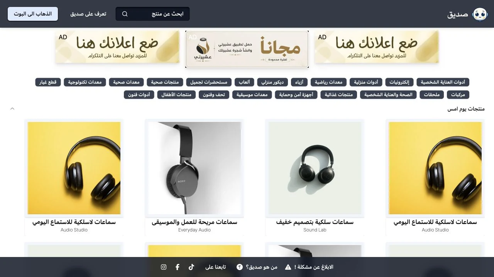
The Arabic storefront turns listings into a browsable marketplace.

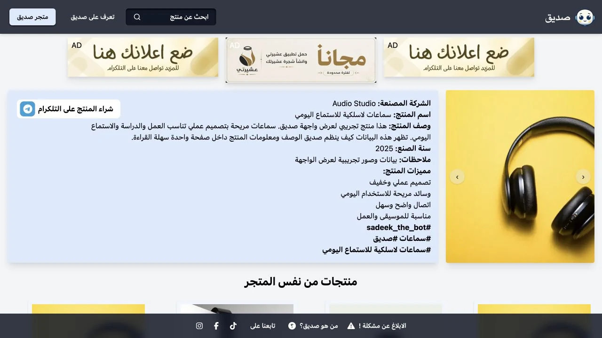
A product page gathers photos, description, price, and seller context.

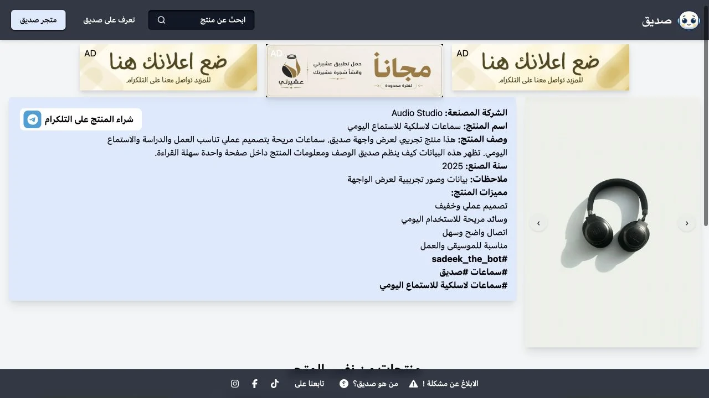
The real image gallery lets a buyer inspect another angle.

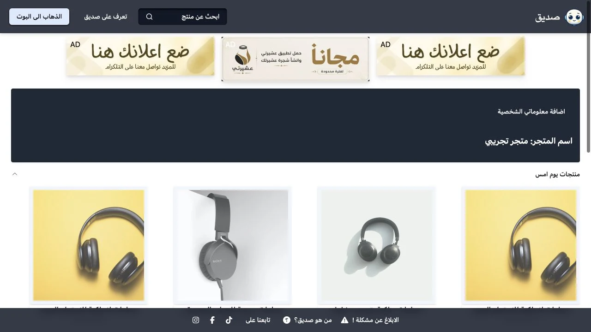
The same browsing system can focus on one seller.

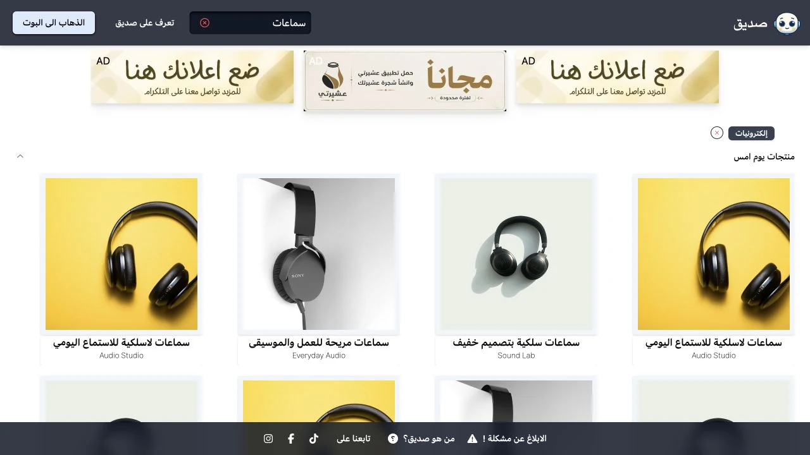
Search narrows the marketplace while preserving the listing layout.

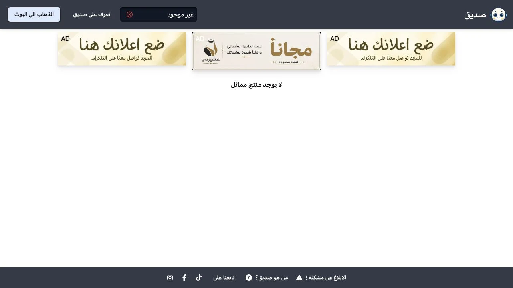
An explicit empty state explains a search with no results.

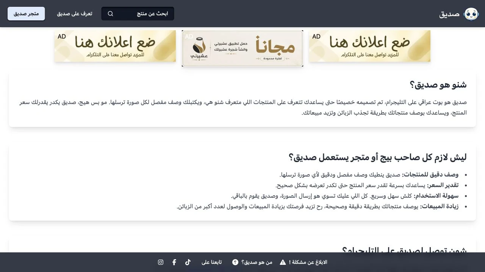
The actual about page introduces the bot and its workflow.

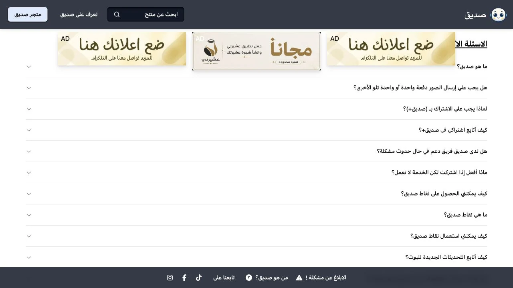
The FAQ covers sending photos, subscriptions, and the storefront.

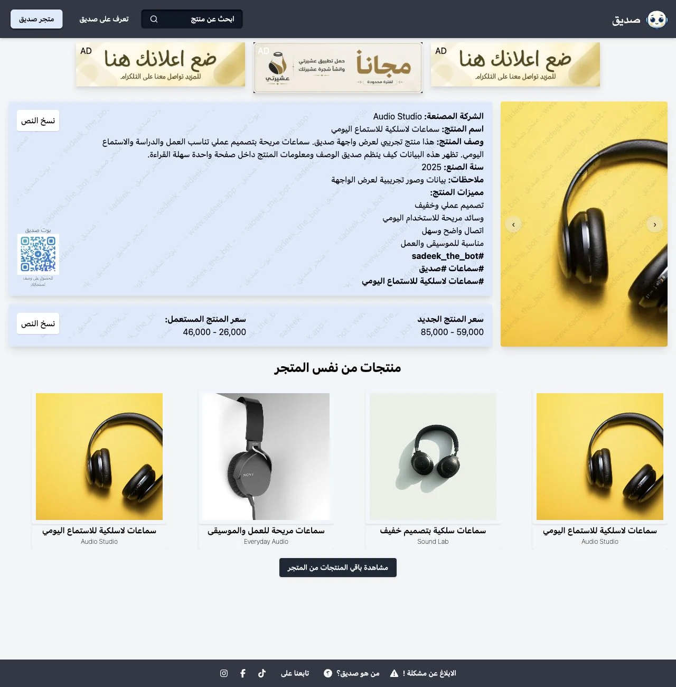
A fictional owner state exposes the product’s existing pricing section.

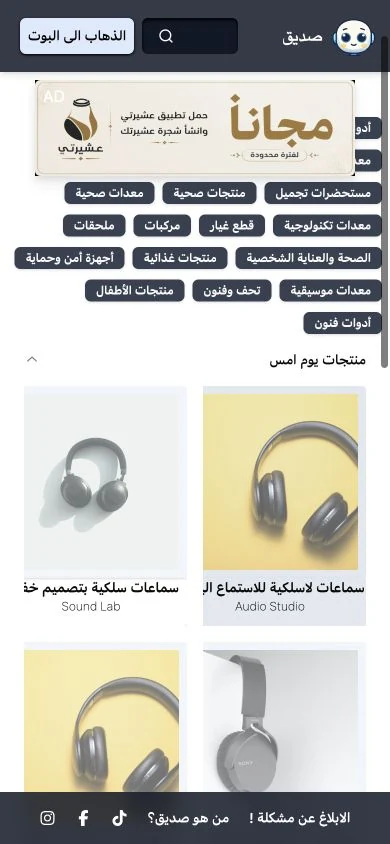
The responsive storefront keeps browsing usable on mobile.

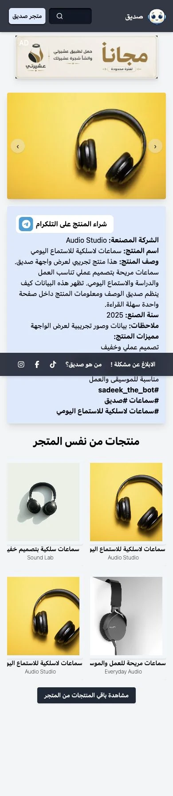
Photos, details, and actions carry through to a smaller screen.
§9 WHAT I LEARNED
In a real AI product, cost, quality and failure handling matter more than the demo.
§10 WHAT I'D CHANGE TODAY
I would choose one product from day one: merchant infrastructure. I would charge earlier because free users taught me about growth, not willingness to pay. I would also set a cost budget for every request before building the pipeline.